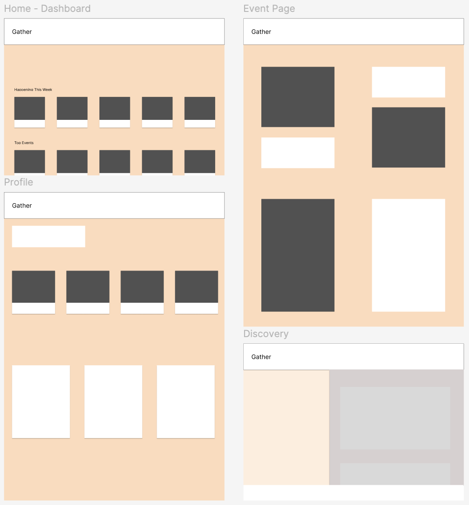
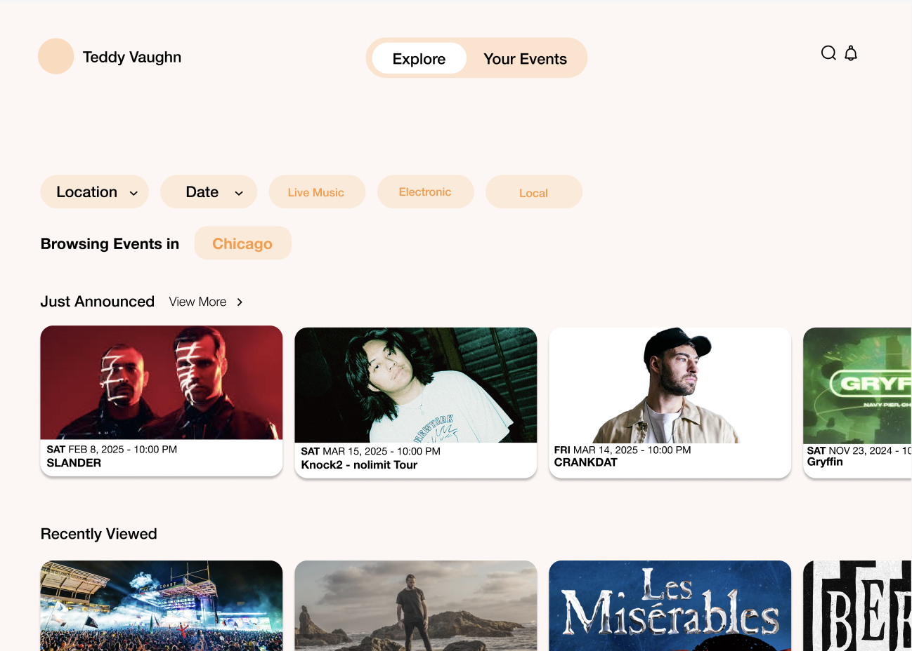
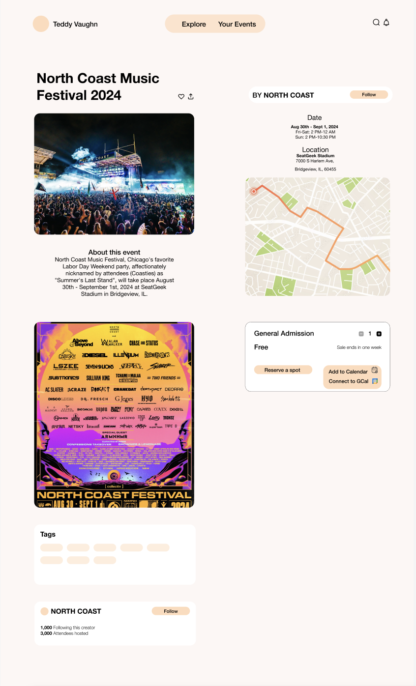
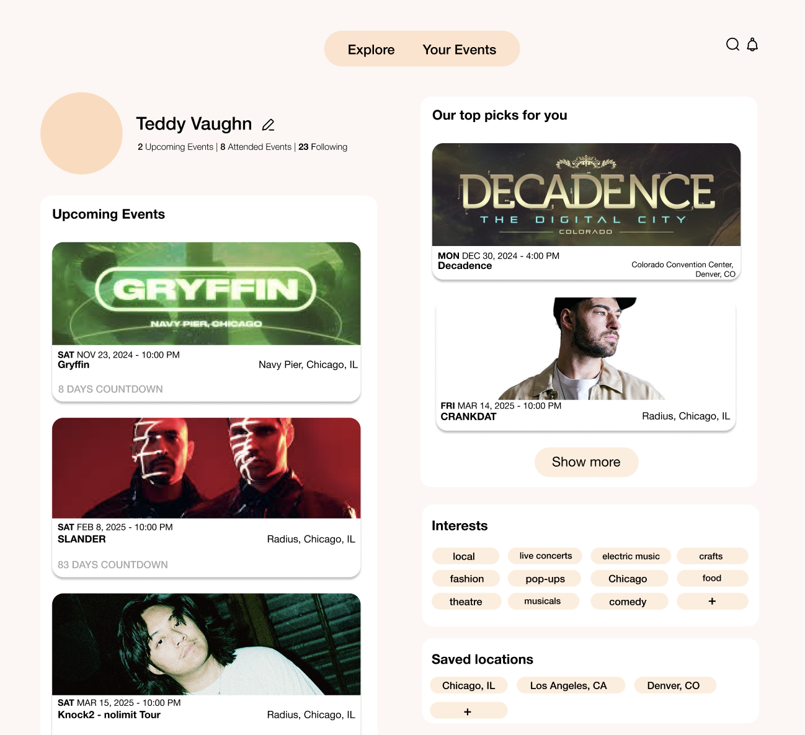

Gather: A Planner Virtual Assistant
Empowering community engagement
Summary
“Gather: A Planner Virtual Assistant” is a case study exploring a prototype designed to enhance event discovery and planning by integrating AI technology and APIs. This application personalizes user recommendations, suggests events based on geolocation, and helps organize schedules according to the user’s calendar. The high-fidelity designs demonstrate the envisioned features and user experience. This case study serves as a research example, showcasing how AI technology, such as Eventbrite, Google Maps, and Google Calendar APIs, can redefine community engagement.
- Market research
- API research
- Competitive Analysis
- Wireframing
- Low-fidelity to high-fidelity designs
Problem
Finding local, relevant, and up-to-date events that meet specific user needs is often a frustrating process.
Challenge
Many existing platforms lack the extended personalization needed to align with users’ specific interests, locations, or schedules, ultimately resulting in missed opportunities for community engagement.
AI and API Research
Low-fidelity sketches
After initial research, I designed...
Interface Development
Description of the development process...
  